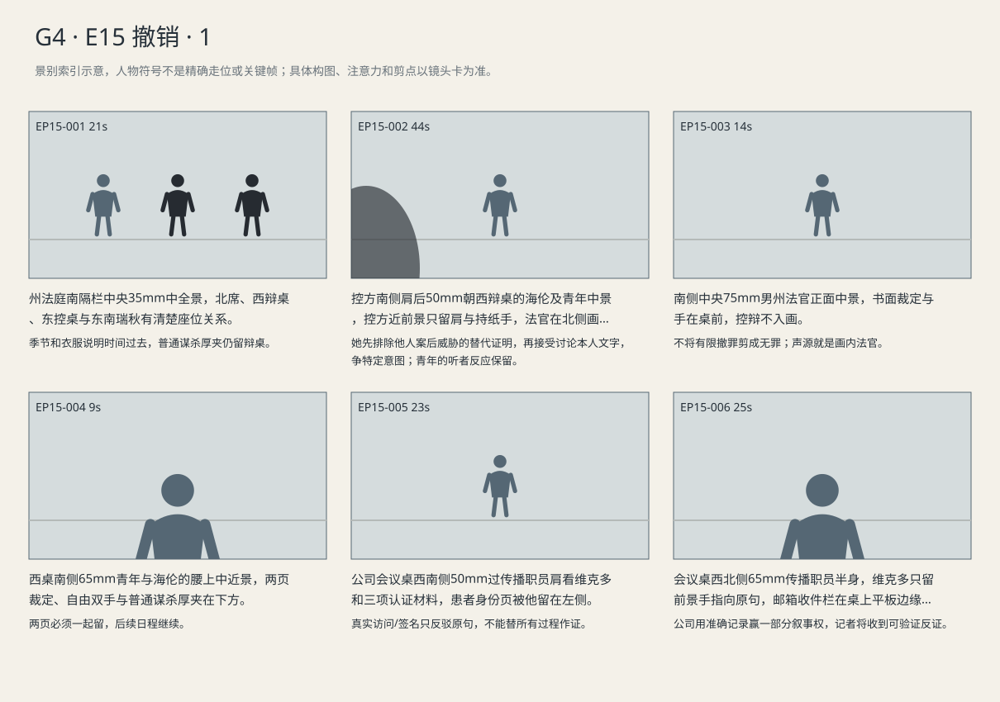
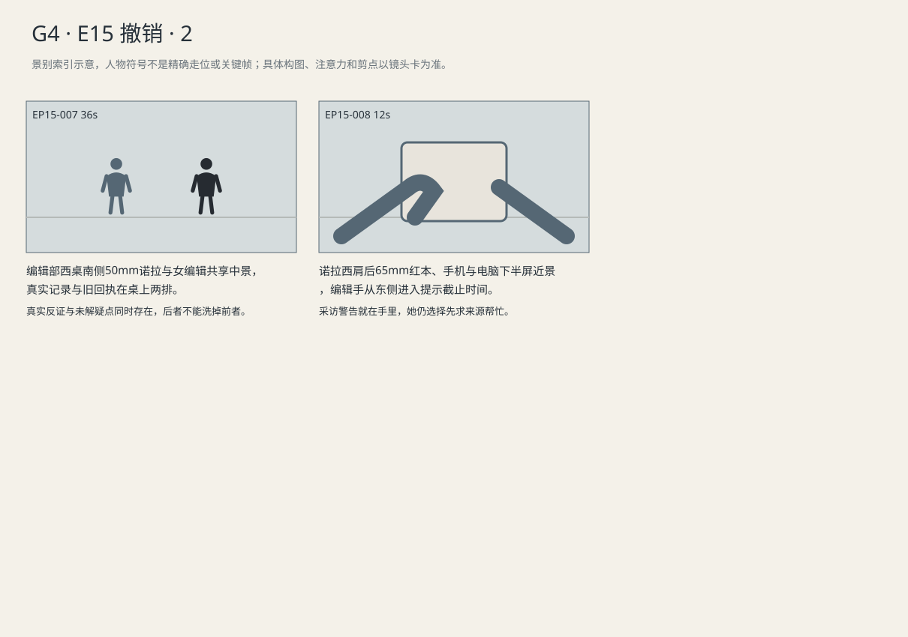

特别控罪撤销但普通谋杀保留；公司只能证明记者那句断言错误，不能据此证明完整复核或否定全部调查。
剧本Markdown · 全部独立复制稿 · 英语字幕 · 中文字幕
详细剧本
E15-SC01 · 日·明确跳时四个月后·春季听证 · COURT-STATE
明确四个月后，春雨拍北高窗。州法官在北，控方东，海伦与深蓝西装白衬衫无领带的路易吉在西；他双手自由，瑞秋仍在东南旁听。
春雨拍着北高窗，案卷标签已换过几轮。青年深蓝西装白衬衫无领带，双手自由坐西桌。海伦只抽出特别控罪那一夹，普通谋杀的厚夹仍留在手边。
检察官将案后威胁邮件与青年笔记叠在一起，向北席提出特别控罪意图。海伦在自己的副本上找到最早那封邮件日期，抽出来搁到外侧。
州检察官（英语，仍试图把本人文字与他人案后行为连成意图）：He targeted the industry. His own writing explains why. Now its workers are getting threats.
中文对照：他针对这个行业，自己的文字写了原因。现在行业里的员工收到了威胁。
海伦举出案后邮件，没有把青年自己的文字藏起来。她把两组放在桌上不同位置，请控方指出其中哪封出自青年；北席看向东桌。
海伦（英语，分开两叠，用具体出处拆控方连接）：These were sent after his arrest. Did he send any of them? Use his words. They're here.
中文对照：这些都在他被捕后才发。哪封是他发的？要看他的文字，在这儿。
控方把后发邮件推开，留下青年自己的文字；海伦也把同一页留在案卷上方，没有借邮件时序回避他本人写过的内容。
州检察官（英语，回到本人材料）：The writing is ours too. We're not relying only on the emails.
中文对照：我们也依据他的文字，不只靠这些邮件。
海伦（英语，承认传播对象，追究具体要件）：Then address the charge. A public audience doesn't settle the intent question.
中文对照：那就针对这项控罪。想让公众看见，还没有回答意图的问题。
控方指青年笔记中的目标选择，海伦没有争事件无害，只将申请页翻到特别罪名的意图项。法官示意双方停在这个问题，不继续谈民意。
州检察官（英语，转守青年自己的传播意图）：He meant to reach the public.
中文对照：他本来就想让公众看到。
海伦（英语，把讨论收回缺失要件）：You still have to prove the intent this charge requires.
中文对照：这项控罪要求的意图，你们还是得证明。
法官读书面裁定，撤销特别控罪后，手仍停在剩余普通谋杀项，随后把裁定放下，示意书记按书面结果安排下一步。
州法官（英语，按庭审与关系自然说，不高声煽情）：The terrorism-related counts are dismissed on this record. This ruling does not dismiss the ordinary murder charge or determine the defendant's guilt.
中文对照：依现有记录撤销恐怖主义相关指控。本裁定不撤销普通谋杀指控，也不判断被告有罪与否。
青年伸手想留一页裁定。海伦将仍列普通谋杀的第二页一起递给他，另一只手继续填后续日程。他接下两页，没再把它们分开。
路易吉（英语，想先拿走胜利那页）：Can I take this?
中文对照：这张能给我吗？
海伦（英语，让限制跟着结果）：Both pages.
中文对照：两页一起留。
E15-SC02 · 日·同日下午 · INSURER
同日下午公司会议室，维克多坐北端，传播职员在南，三项核实过的去身份记录在两人之间，含患者编号页留在他左手下。
公司会议桌上，维克多核对许可范围，传播职员逐项展示真实登录、工作页访问与医生本人签名。含患者编号的一页被他抽出不发。
维克多（英语，逐项点可证实记录，同时撤下身份页）：All verified. The login, page access, doctor's signature. Send the redacted copies.
中文对照：都核实了。登录、页面访问、医生签名。发去掉身份信息的副本。
传播职员给说明加上完整复核，维克多划去，指向诺拉发表的‘Nobody opened the files.’那句，让职员只用三项真实记录回应。
传播职员（英语，寻求强一句）：'Fully reviewed'?
中文对照：写‘完整复核’？
维克多（英语，只圈那句公开断言，不帮自己扩大胜利）：No. We can prove that sentence wrong.
中文对照：不写那个。我们能证明她这句不对。
传播职员删掉完整复核，又把标题改成否定整个调查。维克多没有签这版，将引用框只框住诺拉原句。
传播职员（英语，仍想扩大胜利范围）：So the investigation was false?
中文对照：那就说整个调查是假的？
维克多（英语，让真实证据做有限反击）：That sentence was false. Quote it. Attach what proves it.
中文对照：错的是那一句。原句引出来，证明附上。
职员准备先发公号，维克多将同一组获准公开的附件推到她手边，示意一起送达诺拉邮箱。职员听完指示，确认两边采用相同版本，分别提交公开回应和给记者的更正要求。
维克多（英语，先送对方可核的附件，再施压）：Send her the records. Tell her we want a correction.
中文对照：把记录发她，告诉她我们要求更正。
E15-SC03 · 傍晚·同日 · NEWSROOM
同日傍晚编辑部西窗映着雨，诺拉在西桌把新记录与旧样本日期对上。女值班编辑在东侧，续稿队列开着，红本在诺拉手边。
诺拉将三项记录与样本日期对上，核过来源说明，拿铅笔圈出与旧导语直接冲突的访问记录。编辑站在东桌边等她给结论，她没再把纸推回去。
值班编辑（英语，只要核验结果）：Real?
中文对照：是真的？
诺拉（英语，看着核过的记录承认，不先找解释）：Yeah. The signatures and the login sessions.
中文对照：真的，签名和登录会话都是真的。
诺拉把真实签名和当初三份缺材料回执排成两行。编辑看完，先将当前续稿从发布队列移出，等她说出两者各自证明什么。
诺拉（英语，想保留值得继续调查的问题）：The receipts still don't match the denials.
中文对照：回执和拒赔理由还是对不上。
值班编辑（英语，不让未解问题抵消现有反证）：Then that's another question. This says someone opened the page.
中文对照：那是另一个问题。这里证明有人打开过页面。
诺拉（英语，争取最后的限定）：It doesn't say what they read.
中文对照：没证明他们读了什么。
值班编辑（英语，要求她先处理已经错的部分）：No. It doesn't make your sentence true either.
中文对照：对，也没让你那句话变成真的。
续稿已经移出发布队列，编辑给出恢复发布的截止时间。诺拉合起红本又打开，找到来源警告，仍先拿手机约莉娜见面。
值班编辑（英语，把稿件拖出队列，让时限有实物后果）：You've got until six. Then the follow-up stays down.
中文对照：给你到六点，过了续稿就不发。
诺拉（英语，争最后一点时间）：Let me call her.
中文对照：让我给她打个电话。
景别索引板
简化人物符号仅用于检索景别。完整镜头卡、信息变化及相邻剪点另页阅读。


逐镜复制稿
EP15-001 · 制作号E15-SH001 · 21s · 州法庭南隔栏中央35mm中全景，北席、西辩桌、东控桌与东南瑞秋有清楚座位关系。
季节和衣服说明时间过去，普通谋杀厚夹仍留辩桌。
成片采用 [0,21) 秒；2个生成候选，技术边界不是剪点。候选未生成。
成片镜 E15-SH001 共21秒；下面2个独立生成候选共同服务本镜。技术接续不等于成片剪点，不能将本文件整段提交为一次任务。先制作并核验连续表演、机位和声线，再决定延长或覆盖方案；当前无实际媒体。
【E15-SH001-G01 · 本镜采用 0—8 秒】
16:9横屏，当代美国真人现实悬疑。环境低至中等饱和，人物肤色保持真实差异与自然纹理；深黑保留衣料和道具分离，白纸与白领高光柔和有层次。冷暖来自本镜已有物理光源，不统一青橙、不磨皮、不以整体欠曝制造悬疑。遵循本镜机位、表演与焦点，不擅自追加缓推、急变焦或摇晃。
场次风格：本场时段：日·明确跳时四个月后·春季听证。本场光源启用及强度以明确时段和正文为准，同场反打继承光源方向；不因景别变化任意换色温。 本地光色与材质：北高窗与中性顶灯维持旧木、纸白和深灰的层次；法官、辩方与旁听者用同一写实肤色规则。既定遮挡不盖住已交代的递页、手腕或签名动作。
总生成长度10秒，为中间8秒采用区间保留开头和结尾各1秒自然余量，不增添剧情。
人物：
以下为连续镜的身份库；人物是否已入画、离场及持物只依本段起态与动作，不能把整镜所有角色同时塞入本段。
路易吉，26岁意裔男性，深棕短卷发、浓眉、棕眼、较长椭圆脸、清楚下颌、精瘦体态；深蓝西装、白衬衫、无领带，面容略显疲惫但年龄外观不突变。声音中低、清楚克制。
海伦，55岁白人女性，短灰金发、窄长脸、深灰西装、灰蓝衬衫、银色腕表，蓝色案卷夹。低中音、短句准确，保留等对方回答的停顿。
州检察官，45岁黑人男性，深蓝西装、灰领带。
州法官，60岁白人男性，短银发、黑法袍.
瑞秋，45岁白人女性，深金棕齐肩发、棕羊毛外套、黑连衣裙、素银耳钉，棕色文件袋。声音中低、压住情绪，不全程哽咽。
环境与光源：法官席北，辩方西、控方东、旁听席南，中轴隔栏；从南或西南拍，瑞秋旁听东南、其他支持者西南。北侧高窗冷光、顶灯中性，深红毛衣保留细微织纹。
景别/机位：州法庭南隔栏中央35mm中全景
构图：沿用该成片镜既定机位和场景方向；当前站位、朝向与持物：路易吉空手坐西桌，海伦翻新的标签页。
起始画面：路易吉空手坐西桌，海伦翻新的标签页。
事件与表演：春雨拍着北高窗，案卷标签已换过几轮。青年深蓝西装白衬衫无领带，双手自由坐西桌。海伦只抽出特别控罪那一夹，普通谋杀的厚夹仍留在手边。
注意力变化：路易吉空手坐西桌，海伦翻新的标签页。 → 本次申请范围由分开的夹子可见，旁听落座。
摄影机：固定21秒，检方展开案后邮件与青年文字；春雨只留窗后。
焦点：仅响应本段当前动作与受话关系；不预先转向尚未发生的后段事件。
结束状态：本次申请范围由分开的夹子可见，旁听落座。
声音：<法院通风和安静大厅底声；当前空间连续环境底声；拟音只随本段真实动作与物件接触发生，已完成事件不重演；可辨英语仅为下列本段对白。>
(无背景音乐，场内连续底声承担空间与节奏。)
准确对白按顺序：
无对白。
只说列出的英语原句；导演说明不发声，不说中文译文，不额外加旁白或对白。手机/公文/字幕均由后期叠加，生成画面不排字。单镜连续，不加入内部切镜；前后保持身份、服装、门窗、物件与接触状态一致。
【E15-SH001-G02 · 本镜采用 8—21 秒】
16:9横屏，当代美国真人现实悬疑。环境低至中等饱和，人物肤色保持真实差异与自然纹理；深黑保留衣料和道具分离，白纸与白领高光柔和有层次。冷暖来自本镜已有物理光源，不统一青橙、不磨皮、不以整体欠曝制造悬疑。遵循本镜机位、表演与焦点，不擅自追加缓推、急变焦或摇晃。
场次风格：本场时段：日·明确跳时四个月后·春季听证。本场光源启用及强度以明确时段和正文为准，同场反打继承光源方向；不因景别变化任意换色温。 本地光色与材质：北高窗与中性顶灯维持旧木、纸白和深灰的层次；法官、辩方与旁听者用同一写实肤色规则。既定遮挡不盖住已交代的递页、手腕或签名动作。
总生成长度15秒，为中间13秒采用区间保留开头和结尾各1秒自然余量，不增添剧情。
人物：
以下为连续镜的身份库；人物是否已入画、离场及持物只依本段起态与动作，不能把整镜所有角色同时塞入本段。
路易吉，26岁意裔男性，深棕短卷发、浓眉、棕眼、较长椭圆脸、清楚下颌、精瘦体态；深蓝西装、白衬衫、无领带，面容略显疲惫但年龄外观不突变。声音中低、清楚克制。
海伦，55岁白人女性，短灰金发、窄长脸、深灰西装、灰蓝衬衫、银色腕表，蓝色案卷夹。低中音、短句准确，保留等对方回答的停顿。
州检察官，45岁黑人男性，深蓝西装、灰领带。
州法官，60岁白人男性，短银发、黑法袍.
瑞秋，45岁白人女性，深金棕齐肩发、棕羊毛外套、黑连衣裙、素银耳钉，棕色文件袋。声音中低、压住情绪，不全程哽咽。
环境与光源：法官席北，辩方西、控方东、旁听席南，中轴隔栏；从南或西南拍，瑞秋旁听东南、其他支持者西南。北侧高窗冷光、顶灯中性，深红毛衣保留细微织纹。
景别/机位：州法庭南隔栏中央35mm中全景
构图：沿用该成片镜既定机位和场景方向；当前站位、朝向与持物：本次申请范围由分开的夹子可见，旁听落座。
起始画面：本次申请范围由分开的夹子可见，旁听落座。
事件与表演：检察官将案后威胁邮件与青年笔记叠在一起，向北席提出特别控罪意图。海伦在自己的副本上找到最早那封邮件日期，抽出来搁到外侧。
注意力变化：本次申请范围由分开的夹子可见，旁听落座。 → 同一叠证据开始被按发出者与日期分开。
摄影机：固定21秒，检方展开案后邮件与青年文字；春雨只留窗后。
焦点：仅响应本段当前动作与受话关系；不预先转向尚未发生的后段事件。
结束状态：同一叠证据开始被按发出者与日期分开。
声音：<法院通风和安静大厅底声；当前空间连续环境底声；拟音只随本段真实动作与物件接触发生，已完成事件不重演；可辨英语仅为下列本段对白。>
(无背景音乐，场内连续底声承担空间与节奏。)
准确对白按顺序：
州检察官向州法官，仍试图把本人文字与他人案后行为连成意图，只使用英语说一次：{He targeted the industry. His own writing explains why. Now its workers are getting threats.}
只说列出的英语原句；导演说明不发声，不说中文译文，不额外加旁白或对白。手机/公文/字幕均由后期叠加，生成画面不排字。单镜连续，不加入内部切镜；前后保持身份、服装、门窗、物件与接触状态一致。静帧起态备稿
16:9横屏，当代美国真人现实悬疑。环境低至中等饱和，人物肤色保持真实差异与自然纹理；深黑保留衣料和道具分离，白纸与白领高光柔和有层次。冷暖来自本镜已有物理光源，不统一青橙、不磨皮、不以整体欠曝制造悬疑。遵循本镜机位、表演与焦点，不擅自追加缓推、急变焦或摇晃。
场次风格：本场时段：日·明确跳时四个月后·春季听证。本场光源启用及强度以明确时段和正文为准，同场反打继承光源方向；不因景别变化任意换色温。 本地光色与材质：北高窗与中性顶灯维持旧木、纸白和深灰的层次；法官、辩方与旁听者用同一写实肤色规则。既定遮挡不盖住已交代的递页、手腕或签名动作。
路易吉，26岁意裔男性，深棕短卷发、浓眉、棕眼、较长椭圆脸、清楚下颌、精瘦体态；深蓝西装、白衬衫、无领带，面容略显疲惫但年龄外观不突变。声音中低、清楚克制。
海伦，55岁白人女性，短灰金发、窄长脸、深灰西装、灰蓝衬衫、银色腕表，蓝色案卷夹。低中音、短句准确，保留等对方回答的停顿。
州检察官，45岁黑人男性，深蓝西装、灰领带。
州法官，60岁白人男性，短银发、黑法袍.
瑞秋，45岁白人女性，深金棕齐肩发、棕羊毛外套、黑连衣裙、素银耳钉，棕色文件袋。声音中低、压住情绪，不全程哽咽。
法官席北，辩方西、控方东、旁听席南，中轴隔栏；从南或西南拍，瑞秋旁听东南、其他支持者西南。北侧高窗冷光、顶灯中性，深红毛衣保留细微织纹。
州法庭南隔栏中央35mm中全景，北席、西辩桌、东控桌与东南瑞秋有清楚座位关系。；起态构图：路易吉空手坐西桌，海伦翻新的标签页。。空间方位按上列环境，人物只处于起态；本镜后续调度不出现在静帧。此图不描画尚未发生的动作，不生成字幕和公文长字。
| 英语原句 | 中文对照 | 预定窗口 |
|---|
| 州检察官：He targeted the industry. His own writing explains why. Now its workers are getting threats. | 他针对这个行业，自己的文字写了原因。现在行业里的员工收到了威胁。 | 9–17.2s |
观众信息：让辩护能力来自限定罪名与证据所能证明的范围。 → 同一叠证据开始被按发出者与日期分开。
切点：海伦举最早邮件反驳归属，切她保留不利本人文字的具体做法。
接口：接E15-SH003；海伦举最早邮件反驳归属，切她保留不利本人文字的具体做法。
EP15-002 · 制作号E15-SH003 · 44s · 控方南侧肩后50mm朝西辩桌的海伦及青年中景，控方近前景只留肩与持纸手，法官在北侧画外。
她先排除他人案后威胁的替代证明，再接受讨论本人文字，争特定意图；青年的听者反应保留。
成片采用 [21,65) 秒；3个生成候选，技术边界不是剪点。候选未生成。
成片镜 E15-SH003 共44秒；下面3个独立生成候选共同服务本镜。技术接续不等于成片剪点，不能将本文件整段提交为一次任务。先制作并核验连续表演、机位和声线，再决定延长或覆盖方案；当前无实际媒体。
【E15-SH003-G01 · 本镜采用 0—13 秒】
16:9横屏，当代美国真人现实悬疑。环境低至中等饱和，人物肤色保持真实差异与自然纹理；深黑保留衣料和道具分离，白纸与白领高光柔和有层次。冷暖来自本镜已有物理光源，不统一青橙、不磨皮、不以整体欠曝制造悬疑。遵循本镜机位、表演与焦点，不擅自追加缓推、急变焦或摇晃。
场次风格：本场时段：日·明确跳时四个月后·春季听证。本场光源启用及强度以明确时段和正文为准，同场反打继承光源方向；不因景别变化任意换色温。 本地光色与材质：北高窗与中性顶灯维持旧木、纸白和深灰的层次；法官、辩方与旁听者用同一写实肤色规则。既定遮挡不盖住已交代的递页、手腕或签名动作。
总生成长度15秒，为中间13秒采用区间保留开头和结尾各1秒自然余量，不增添剧情。
人物：
以下为连续镜的身份库；人物是否已入画、离场及持物只依本段起态与动作，不能把整镜所有角色同时塞入本段。
海伦，55岁白人女性，短灰金发、窄长脸、深灰西装、灰蓝衬衫、银色腕表，蓝色案卷夹。低中音、短句准确，保留等对方回答的停顿。
路易吉，26岁意裔男性，深棕短卷发、浓眉、棕眼、较长椭圆脸、清楚下颌、精瘦体态；深蓝西装、白衬衫、无领带，面容略显疲惫但年龄外观不突变。声音中低、清楚克制。
州检察官，45岁黑人男性，深蓝西装、灰领带。
环境与光源：法官席北，辩方西、控方东、旁听席南，中轴隔栏；从南或西南拍，瑞秋旁听东南、其他支持者西南。北侧高窗冷光、顶灯中性，深红毛衣保留细微织纹。
景别/机位：控方南侧肩后50mm朝西辩桌的海伦及青年中景
构图：沿用该成片镜既定机位和场景方向；当前站位、朝向与持物：同一叠证据开始被按发出者与日期分开。
起始画面：同一叠证据开始被按发出者与日期分开。
事件与表演：海伦举出案后邮件，没有把青年自己的文字藏起来。她把两组放在桌上不同位置，请控方指出其中哪封出自青年；北席看向东桌。
注意力变化：同一叠证据开始被按发出者与日期分开。 → 公众后果没有自动成为本人发送的威胁。
摄影机：固定44秒；纸在律师手中交换主次，相机不交替扫两席。
焦点：仅响应本段当前动作与受话关系；不预先转向尚未发生的后段事件。
结束状态：公众后果没有自动成为本人发送的威胁。
声音：<法院通风和安静大厅底声；当前空间连续环境底声；拟音只随本段真实动作与物件接触发生，已完成事件不重演；可辨英语仅为下列本段对白。>
(无背景音乐，场内连续底声承担空间与节奏。)
准确对白按顺序：
海伦向州法官，分开两叠，用具体出处拆控方连接，只使用英语说一次：{These were sent after his arrest. Did he send any of them? Use his words. They're here.}
只说列出的英语原句；导演说明不发声，不说中文译文，不额外加旁白或对白。手机/公文/字幕均由后期叠加，生成画面不排字。单镜连续，不加入内部切镜；前后保持身份、服装、门窗、物件与接触状态一致。
【E15-SH003-G02 · 本镜采用 13—31 秒】
16:9横屏，当代美国真人现实悬疑。环境低至中等饱和，人物肤色保持真实差异与自然纹理；深黑保留衣料和道具分离，白纸与白领高光柔和有层次。冷暖来自本镜已有物理光源，不统一青橙、不磨皮、不以整体欠曝制造悬疑。遵循本镜机位、表演与焦点，不擅自追加缓推、急变焦或摇晃。
场次风格：本场时段：日·明确跳时四个月后·春季听证。本场光源启用及强度以明确时段和正文为准，同场反打继承光源方向；不因景别变化任意换色温。 本地光色与材质：北高窗与中性顶灯维持旧木、纸白和深灰的层次；法官、辩方与旁听者用同一写实肤色规则。既定遮挡不盖住已交代的递页、手腕或签名动作。
总生成长度20秒，为中间18秒采用区间保留开头和结尾各1秒自然余量，不增添剧情。
人物：
以下为连续镜的身份库；人物是否已入画、离场及持物只依本段起态与动作，不能把整镜所有角色同时塞入本段。
海伦，55岁白人女性，短灰金发、窄长脸、深灰西装、灰蓝衬衫、银色腕表，蓝色案卷夹。低中音、短句准确，保留等对方回答的停顿。
路易吉，26岁意裔男性，深棕短卷发、浓眉、棕眼、较长椭圆脸、清楚下颌、精瘦体态；深蓝西装、白衬衫、无领带，面容略显疲惫但年龄外观不突变。声音中低、清楚克制。
州检察官，45岁黑人男性，深蓝西装、灰领带。
环境与光源：法官席北，辩方西、控方东、旁听席南，中轴隔栏；从南或西南拍，瑞秋旁听东南、其他支持者西南。北侧高窗冷光、顶灯中性，深红毛衣保留细微织纹。
景别/机位：控方南侧肩后50mm朝西辩桌的海伦及青年中景
构图：沿用该成片镜既定机位和场景方向；当前站位、朝向与持物：公众后果没有自动成为本人发送的威胁。
起始画面：公众后果没有自动成为本人发送的威胁。
事件与表演：控方把后发邮件推开，留下青年自己的文字；海伦也把同一页留在案卷上方，没有借邮件时序回避他本人写过的内容。
注意力变化：公众后果没有自动成为本人发送的威胁。 → 法官让双方停在控罪所需的意图项，案后声浪不替代证明。
摄影机：固定44秒；纸在律师手中交换主次，相机不交替扫两席。
焦点：仅响应本段当前动作与受话关系；不预先转向尚未发生的后段事件。
结束状态：法官让双方停在控罪所需的意图项，案后声浪不替代证明。
声音：<法院通风和安静大厅底声；当前空间连续环境底声；拟音只随本段真实动作与物件接触发生，已完成事件不重演；可辨英语仅为下列本段对白。>
(无背景音乐，场内连续底声承担空间与节奏。)
准确对白按顺序：
州检察官向州法官，回到本人材料，只使用英语说一次：{The writing is ours too. We're not relying only on the emails.}
海伦向路易吉，承认传播对象，追究具体要件，只使用英语说一次：{Then address the charge. A public audience doesn't settle the intent question.}
只说列出的英语原句；导演说明不发声，不说中文译文，不额外加旁白或对白。手机/公文/字幕均由后期叠加，生成画面不排字。单镜连续，不加入内部切镜；前后保持身份、服装、门窗、物件与接触状态一致。
【E15-SH003-G03 · 本镜采用 31—44 秒】
16:9横屏，当代美国真人现实悬疑。环境低至中等饱和，人物肤色保持真实差异与自然纹理；深黑保留衣料和道具分离，白纸与白领高光柔和有层次。冷暖来自本镜已有物理光源，不统一青橙、不磨皮、不以整体欠曝制造悬疑。遵循本镜机位、表演与焦点，不擅自追加缓推、急变焦或摇晃。
场次风格：本场时段：日·明确跳时四个月后·春季听证。本场光源启用及强度以明确时段和正文为准，同场反打继承光源方向；不因景别变化任意换色温。 本地光色与材质：北高窗与中性顶灯维持旧木、纸白和深灰的层次；法官、辩方与旁听者用同一写实肤色规则。既定遮挡不盖住已交代的递页、手腕或签名动作。
总生成长度15秒，为中间13秒采用区间保留开头和结尾各1秒自然余量，不增添剧情。
人物：
以下为连续镜的身份库；人物是否已入画、离场及持物只依本段起态与动作，不能把整镜所有角色同时塞入本段。
海伦，55岁白人女性，短灰金发、窄长脸、深灰西装、灰蓝衬衫、银色腕表，蓝色案卷夹。低中音、短句准确，保留等对方回答的停顿。
路易吉，26岁意裔男性，深棕短卷发、浓眉、棕眼、较长椭圆脸、清楚下颌、精瘦体态；深蓝西装、白衬衫、无领带，面容略显疲惫但年龄外观不突变。声音中低、清楚克制。
州检察官，45岁黑人男性，深蓝西装、灰领带。
环境与光源：法官席北，辩方西、控方东、旁听席南，中轴隔栏；从南或西南拍，瑞秋旁听东南、其他支持者西南。北侧高窗冷光、顶灯中性，深红毛衣保留细微织纹。
景别/机位：控方南侧肩后50mm朝西辩桌的海伦及青年中景
构图：沿用该成片镜既定机位和场景方向；当前站位、朝向与持物：法官让双方停在控罪所需的意图项，案后声浪不替代证明。
起始画面：法官让双方停在控罪所需的意图项，案后声浪不替代证明。
事件与表演：控方指青年笔记中的目标选择，海伦没有争事件无害，只将申请页翻到特别罪名的意图项。法官示意双方停在这个问题，不继续谈民意。
注意力变化：法官让双方停在控罪所需的意图项，案后声浪不替代证明。 → 普通谋杀责任与特别罪名的要件被分开争。
摄影机：固定44秒；纸在律师手中交换主次，相机不交替扫两席。
焦点：仅响应本段当前动作与受话关系；不预先转向尚未发生的后段事件。
结束状态：普通谋杀责任与特别罪名的要件被分开争。
声音：<法院通风和安静大厅底声；当前空间连续环境底声；拟音只随本段真实动作与物件接触发生，已完成事件不重演；可辨英语仅为下列本段对白。>
(无背景音乐，场内连续底声承担空间与节奏。)
准确对白按顺序：
州检察官向州法官，转守青年自己的传播意图，只使用英语说一次：{He meant to reach the public.}
海伦向州法官，把讨论收回缺失要件，只使用英语说一次：{You still have to prove the intent this charge requires.}
只说列出的英语原句；导演说明不发声，不说中文译文，不额外加旁白或对白。手机/公文/字幕均由后期叠加，生成画面不排字。单镜连续，不加入内部切镜；前后保持身份、服装、门窗、物件与接触状态一致。静帧起态备稿
16:9横屏，当代美国真人现实悬疑。环境低至中等饱和，人物肤色保持真实差异与自然纹理；深黑保留衣料和道具分离，白纸与白领高光柔和有层次。冷暖来自本镜已有物理光源，不统一青橙、不磨皮、不以整体欠曝制造悬疑。遵循本镜机位、表演与焦点，不擅自追加缓推、急变焦或摇晃。
场次风格：本场时段：日·明确跳时四个月后·春季听证。本场光源启用及强度以明确时段和正文为准，同场反打继承光源方向；不因景别变化任意换色温。 本地光色与材质：北高窗与中性顶灯维持旧木、纸白和深灰的层次；法官、辩方与旁听者用同一写实肤色规则。既定遮挡不盖住已交代的递页、手腕或签名动作。
海伦，55岁白人女性，短灰金发、窄长脸、深灰西装、灰蓝衬衫、银色腕表，蓝色案卷夹。低中音、短句准确，保留等对方回答的停顿。
路易吉，26岁意裔男性，深棕短卷发、浓眉、棕眼、较长椭圆脸、清楚下颌、精瘦体态；深蓝西装、白衬衫、无领带，面容略显疲惫但年龄外观不突变。声音中低、清楚克制。
州检察官，45岁黑人男性，深蓝西装、灰领带。
法官席北，辩方西、控方东、旁听席南，中轴隔栏；从南或西南拍，瑞秋旁听东南、其他支持者西南。北侧高窗冷光、顶灯中性，深红毛衣保留细微织纹。
控方南侧肩后50mm朝西辩桌的海伦及青年中景，控方近前景只留肩与持纸手，法官在北侧画外。；起态构图：同一叠证据开始被按发出者与日期分开。。空间方位按上列环境，人物只处于起态；本镜后续调度不出现在静帧。此图不描画尚未发生的动作，不生成字幕和公文长字。
| 英语原句 | 中文对照 | 预定窗口 |
|---|
| 海伦：These were sent after his arrest. Did he send any of them? Use his words. They're here. | 这些都在他被捕后才发。哪封是他发的？要看他的文字，在这儿。 | 1–9.6s |
| 州检察官：The writing is ours too. We're not relying only on the emails. | 我们也依据他的文字，不只靠这些邮件。 | 14–18.71s |
| 海伦：Then address the charge. A public audience doesn't settle the intent question. | 那就针对这项控罪。想让公众看见，还没有回答意图的问题。 | 19.01–23.71s |
| 州检察官：He meant to reach the public. | 他本来就想让公众看到。 | 32–34.3s |
| 海伦：You still have to prove the intent this charge requires. | 这项控罪要求的意图，你们还是得证明。 | 34.6–39.3s |
观众信息：同一叠证据开始被按发出者与日期分开。 → 普通谋杀责任与特别罪名的要件被分开争。
切点：法官停止争论开始读裁定，切权力实际发出结果的北席。
接口：接E15-SH005；法官停止争论开始读裁定，切权力实际发出结果的北席。
EP15-003 · 制作号E15-SH005 · 14s · 南侧中央75mm男州法官正面中景，书面裁定与手在桌前，控辩不入画。
不将有限撤罪剪成无罪；声源就是画内法官。
成片采用 [65,79) 秒；1个生成候选，技术边界不是剪点。候选未生成。
16:9横屏，当代美国真人现实悬疑。环境低至中等饱和，人物肤色保持真实差异与自然纹理；深黑保留衣料和道具分离，白纸与白领高光柔和有层次。冷暖来自本镜已有物理光源，不统一青橙、不磨皮、不以整体欠曝制造悬疑。遵循本镜机位、表演与焦点，不擅自追加缓推、急变焦或摇晃。
场次风格：本场时段：日·明确跳时四个月后·春季听证。本场光源启用及强度以明确时段和正文为准，同场反打继承光源方向；不因景别变化任意换色温。 本地光色与材质：北高窗与中性顶灯维持旧木、纸白和深灰的层次；法官、辩方与旁听者用同一写实肤色规则。既定遮挡不盖住已交代的递页、手腕或签名动作。
总生成长度16秒，为中间14秒采用区间保留开头和结尾各1秒自然余量，不增添剧情。
人物：
州法官，60岁白人男性，短银发、黑法袍.
环境与光源：法官席北，辩方西、控方东、旁听席南，中轴隔栏；从南或西南拍，瑞秋旁听东南、其他支持者西南。北侧高窗冷光、顶灯中性，深红毛衣保留细微织纹。
景别/机位：南侧中央75mm男州法官正面中景，书面裁定与手在桌前，控辩不入画。
构图：明确四个月后，春雨拍北高窗。州法官在北，控方东，海伦与深蓝西装白衬衫无领带的路易吉在西；他双手自由，瑞秋仍在东南旁听。 本镜画内角色：JUDGE-STATE。
起始画面：普通谋杀责任与特别罪名的要件被分开争。
事件与表演：法官读书面裁定，撤销特别控罪后，手仍停在剩余普通谋杀项，随后把裁定放下，示意书记按书面结果安排下一步。
注意力变化：普通谋杀责任与特别罪名的要件被分开争。 → 北席裁定宣读完，普通谋杀继续；省略书记分发两页副本的时间，下一镜西桌已有完整副本。
摄影机：固定14秒，一口气给出撤销范围及普通谋杀仍在。
焦点：不将有限撤罪剪成无罪；声源就是画内法官。
结束状态：北席裁定宣读完，普通谋杀继续；省略书记分发两页副本的时间，下一镜西桌已有完整副本。
声音：<木椅、纸页与法庭室内混响，所列台词按既定席位发声，旁听者不喊话。>
(无背景音乐，场内连续底声承担空间与节奏。)
准确对白按顺序：
州法官向控辩双方，按庭审与关系自然说，不高声煽情，只使用英语说一次：{The terrorism-related counts are dismissed on this record. This ruling does not dismiss the ordinary murder charge or determine the defendant's guilt.}
只说列出的英语原句；导演说明不发声，不说中文译文，不额外加旁白或对白。手机/公文/字幕均由后期叠加，生成画面不排字。单镜连续，不加入内部切镜；前后保持身份、服装、门窗、物件与接触状态一致。静帧起态备稿
16:9横屏，当代美国真人现实悬疑。环境低至中等饱和，人物肤色保持真实差异与自然纹理；深黑保留衣料和道具分离，白纸与白领高光柔和有层次。冷暖来自本镜已有物理光源，不统一青橙、不磨皮、不以整体欠曝制造悬疑。遵循本镜机位、表演与焦点，不擅自追加缓推、急变焦或摇晃。
场次风格：本场时段：日·明确跳时四个月后·春季听证。本场光源启用及强度以明确时段和正文为准，同场反打继承光源方向；不因景别变化任意换色温。 本地光色与材质：北高窗与中性顶灯维持旧木、纸白和深灰的层次；法官、辩方与旁听者用同一写实肤色规则。既定遮挡不盖住已交代的递页、手腕或签名动作。
州法官，60岁白人男性，短银发、黑法袍.
法官席北，辩方西、控方东、旁听席南，中轴隔栏；从南或西南拍，瑞秋旁听东南、其他支持者西南。北侧高窗冷光、顶灯中性，深红毛衣保留细微织纹。
南侧中央75mm男州法官正面中景，书面裁定与手在桌前，控辩不入画。；起态构图：普通谋杀责任与特别罪名的要件被分开争。。空间方位按上列环境，人物只处于起态；本镜后续调度不出现在静帧。此图不描画尚未发生的动作，不生成字幕和公文长字。
| 英语原句 | 中文对照 | 预定窗口 |
|---|
| 州法官：The terrorism-related counts are dismissed on this record. This ruling does not dismiss the ordinary murder charge or determine the defendant's guilt. | 依现有记录撤销恐怖主义相关指控。本裁定不撤销普通谋杀指控，也不判断被告有罪与否。 | 1.1–12.8s |
观众信息：普通谋杀责任与特别罪名的要件被分开争。 → 北席裁定宣读完，普通谋杀继续；省略书记分发两页副本的时间，下一镜西桌已有完整副本。
切点：完整裁定说完，切看被告如何拿走这份结果。
接口：接E15-SH006；完整裁定说完，切看被告如何拿走这份结果。
EP15-004 · 制作号E15-SH006 · 9s · 西桌南侧65mm青年与海伦的腰上中近景，两页裁定、自由双手与普通谋杀厚夹在下方。
两页必须一起留，后续日程继续。
成片采用 [79,88) 秒；1个生成候选，技术边界不是剪点。候选未生成。
16:9横屏，当代美国真人现实悬疑。环境低至中等饱和，人物肤色保持真实差异与自然纹理；深黑保留衣料和道具分离，白纸与白领高光柔和有层次。冷暖来自本镜已有物理光源，不统一青橙、不磨皮、不以整体欠曝制造悬疑。遵循本镜机位、表演与焦点，不擅自追加缓推、急变焦或摇晃。
场次风格：本场时段：日·明确跳时四个月后·春季听证。本场光源启用及强度以明确时段和正文为准，同场反打继承光源方向；不因景别变化任意换色温。 本地光色与材质：北高窗与中性顶灯维持旧木、纸白和深灰的层次；法官、辩方与旁听者用同一写实肤色规则。既定遮挡不盖住已交代的递页、手腕或签名动作。
总生成长度11秒，为中间9秒采用区间保留开头和结尾各1秒自然余量，不增添剧情。
人物：
路易吉，26岁意裔男性，深棕短卷发、浓眉、棕眼、较长椭圆脸、清楚下颌、精瘦体态；深蓝西装、白衬衫、无领带，面容略显疲惫但年龄外观不突变。声音中低、清楚克制。
海伦，55岁白人女性，短灰金发、窄长脸、深灰西装、灰蓝衬衫、银色腕表，蓝色案卷夹。低中音、短句准确，保留等对方回答的停顿。
环境与光源：法官席北，辩方西、控方东、旁听席南，中轴隔栏；从南或西南拍，瑞秋旁听东南、其他支持者西南。北侧高窗冷光、顶灯中性，深红毛衣保留细微织纹。
景别/机位：西桌南侧65mm青年与海伦的腰上中近景，两页裁定、自由双手与普通谋杀厚夹在下方。
构图：明确四个月后，春雨拍北高窗。州法官在北，控方东，海伦与深蓝西装白衬衫无领带的路易吉在西；他双手自由，瑞秋仍在东南旁听。 本镜画内角色：LUIGI-FORMAL,HELEN。
起始画面：北席裁定宣读完，普通谋杀继续；省略书记分发两页副本的时间，下一镜西桌已有完整副本。
事件与表演：青年伸手想留一页裁定。海伦将仍列普通谋杀的第二页一起递给他，另一只手继续填后续日程。他接下两页，没再把它们分开。
注意力变化：北席裁定宣读完，普通谋杀继续；省略书记分发两页副本的时间，下一镜西桌已有完整副本。 → 青年留完整裁定，律师继续安排州案。
摄影机：固定9秒，第二页由海伦一起递给他，不另拍庆祝脸。
焦点：两页必须一起留，后续日程继续。
结束状态：青年留完整裁定，律师继续安排州案。
声音：<木椅、纸页与法庭室内混响，所列台词按既定席位发声，旁听者不喊话。>
(无背景音乐，场内连续底声承担空间与节奏。)
准确对白按顺序：
路易吉向海伦，想先拿走胜利那页，只使用英语说一次：{Can I take this?}
海伦向路易吉，让限制跟着结果，只使用英语说一次：{Both pages.}
只说列出的英语原句；导演说明不发声，不说中文译文，不额外加旁白或对白。手机/公文/字幕均由后期叠加，生成画面不排字。单镜连续，不加入内部切镜；前后保持身份、服装、门窗、物件与接触状态一致。静帧起态备稿
16:9横屏，当代美国真人现实悬疑。环境低至中等饱和，人物肤色保持真实差异与自然纹理；深黑保留衣料和道具分离，白纸与白领高光柔和有层次。冷暖来自本镜已有物理光源，不统一青橙、不磨皮、不以整体欠曝制造悬疑。遵循本镜机位、表演与焦点，不擅自追加缓推、急变焦或摇晃。
场次风格：本场时段：日·明确跳时四个月后·春季听证。本场光源启用及强度以明确时段和正文为准，同场反打继承光源方向；不因景别变化任意换色温。 本地光色与材质：北高窗与中性顶灯维持旧木、纸白和深灰的层次；法官、辩方与旁听者用同一写实肤色规则。既定遮挡不盖住已交代的递页、手腕或签名动作。
路易吉，26岁意裔男性，深棕短卷发、浓眉、棕眼、较长椭圆脸、清楚下颌、精瘦体态；深蓝西装、白衬衫、无领带，面容略显疲惫但年龄外观不突变。声音中低、清楚克制。
海伦，55岁白人女性，短灰金发、窄长脸、深灰西装、灰蓝衬衫、银色腕表，蓝色案卷夹。低中音、短句准确，保留等对方回答的停顿。
法官席北，辩方西、控方东、旁听席南，中轴隔栏；从南或西南拍，瑞秋旁听东南、其他支持者西南。北侧高窗冷光、顶灯中性，深红毛衣保留细微织纹。
西桌南侧65mm青年与海伦的腰上中近景，两页裁定、自由双手与普通谋杀厚夹在下方。；起态构图：北席裁定宣读完，普通谋杀继续；省略书记分发两页副本的时间，下一镜西桌已有完整副本。。空间方位按上列环境，人物只处于起态；本镜后续调度不出现在静帧。此图不描画尚未发生的动作，不生成字幕和公文长字。
| 英语原句 | 中文对照 | 预定窗口 |
|---|
| 路易吉：Can I take this? | 这张能给我吗？ | 1–3.3s |
| 海伦：Both pages. | 两页一起留。 | 3.6–4.9s |
观众信息：北席裁定宣读完，普通谋杀继续；省略书记分发两页副本的时间，下一镜西桌已有完整副本。 → 青年留完整裁定，律师继续安排州案。
切点：他接两页，切同日公司以另一份真实记录反击。
接口：本场结果成立后切入 E15-SC02（INSURER，日·同日下午）；以新场开头建立空间和人物持物，环境声按新场接入。
EP15-005 · 制作号E15-SH007 · 23s · 公司会议桌西南侧50mm过传播职员肩看维克多和三项认证材料，患者身份页被他留在左侧。
真实访问/签名只反驳原句，不能替所有过程作证。
成片采用 [88,111) 秒；2个生成候选，技术边界不是剪点。候选未生成。
成片镜 E15-SH007 共23秒；下面2个独立生成候选共同服务本镜。技术接续不等于成片剪点，不能将本文件整段提交为一次任务。先制作并核验连续表演、机位和声线，再决定延长或覆盖方案；当前无实际媒体。
【E15-SH007-G01 · 本镜采用 0—13 秒】
16:9横屏，当代美国真人现实悬疑。环境低至中等饱和，人物肤色保持真实差异与自然纹理；深黑保留衣料和道具分离，白纸与白领高光柔和有层次。冷暖来自本镜已有物理光源，不统一青橙、不磨皮、不以整体欠曝制造悬疑。遵循本镜机位、表演与焦点，不擅自追加缓推、急变焦或摇晃。
场次风格：本场时段：日·同日下午。本场光源启用及强度以明确时段和正文为准，同场反打继承光源方向；不因景别变化任意换色温。 本地光色与材质：玻璃、浅灰表面、整洁木色与中性肤色构成明净办公室；不以邪恶绿光标记立场。玻璃边缘和桌面分区体现发言权，摄影只按本镜既定触发响应说话人。
总生成长度15秒，为中间13秒采用区间保留开头和结尾各1秒自然余量，不增添剧情。
人物：
以下为连续镜的身份库；人物是否已入画、离场及持物只依本段起态与动作，不能把整镜所有角色同时塞入本段。
维克多，50岁白人男性，短灰发、整洁胡茬、海军蓝西装、银灰领带，平板电脑。声音平稳，不以反派邪笑/低吼替代控制力。
公司传播职员，30岁白人女性，棕色短发、藏蓝衬衣，声音利落，配合公告录制，不承担幕后主导角色。
环境与光源：公司会议室/工区共享楼层；入口南、玻璃走廊东、会议桌中央、北侧显示屏、西窗。质检工位靠东侧，账号权限有限。屏幕内容后期替换。
景别/机位：公司会议桌西南侧50mm过传播职员肩看维克多和三项认证材料
构图：沿用该成片镜既定机位和场景方向；当前站位、朝向与持物：去身份资料平放桌中。
起始画面：去身份资料平放桌中。
事件与表演：公司会议桌上，维克多核对许可范围，传播职员逐项展示真实登录、工作页访问与医生本人签名。含患者编号的一页被他抽出不发。
注意力变化：去身份资料平放桌中。 → 可公开的去身份反证留三项，不给完整复核背书。
摄影机：固定23秒，先核可公开范围，再划掉完整复核。
焦点：仅响应本段当前动作与受话关系；不预先转向尚未发生的后段事件。
结束状态：可公开的去身份反证留三项，不给完整复核背书。
声音：<公司中央空调低响；当前空间连续环境底声；拟音只随本段真实动作与物件接触发生，已完成事件不重演；可辨英语仅为下列本段对白。>
(无背景音乐，场内连续底声承担空间与节奏。)
准确对白按顺序：
维克多向传播职员，逐项点可证实记录，同时撤下身份页，只使用英语说一次：{All verified. The login, page access, doctor's signature. Send the redacted copies.}
只说列出的英语原句；导演说明不发声，不说中文译文，不额外加旁白或对白。手机/公文/字幕均由后期叠加，生成画面不排字。单镜连续，不加入内部切镜；前后保持身份、服装、门窗、物件与接触状态一致。
【E15-SH007-G02 · 本镜采用 13—23 秒】
16:9横屏，当代美国真人现实悬疑。环境低至中等饱和，人物肤色保持真实差异与自然纹理；深黑保留衣料和道具分离，白纸与白领高光柔和有层次。冷暖来自本镜已有物理光源，不统一青橙、不磨皮、不以整体欠曝制造悬疑。遵循本镜机位、表演与焦点，不擅自追加缓推、急变焦或摇晃。
场次风格：本场时段：日·同日下午。本场光源启用及强度以明确时段和正文为准，同场反打继承光源方向；不因景别变化任意换色温。 本地光色与材质：玻璃、浅灰表面、整洁木色与中性肤色构成明净办公室；不以邪恶绿光标记立场。玻璃边缘和桌面分区体现发言权，摄影只按本镜既定触发响应说话人。
总生成长度12秒，为中间10秒采用区间保留开头和结尾各1秒自然余量，不增添剧情。
人物：
以下为连续镜的身份库；人物是否已入画、离场及持物只依本段起态与动作，不能把整镜所有角色同时塞入本段。
维克多，50岁白人男性，短灰发、整洁胡茬、海军蓝西装、银灰领带，平板电脑。声音平稳，不以反派邪笑/低吼替代控制力。
公司传播职员，30岁白人女性，棕色短发、藏蓝衬衣，声音利落，配合公告录制，不承担幕后主导角色。
环境与光源：公司会议室/工区共享楼层；入口南、玻璃走廊东、会议桌中央、北侧显示屏、西窗。质检工位靠东侧，账号权限有限。屏幕内容后期替换。
景别/机位：公司会议桌西南侧50mm过传播职员肩看维克多和三项认证材料
构图：沿用该成片镜既定机位和场景方向；当前站位、朝向与持物：可公开的去身份反证留三项，不给完整复核背书。
起始画面：可公开的去身份反证留三项，不给完整复核背书。
事件与表演：传播职员给说明加上完整复核，维克多划去，指向诺拉发表的‘Nobody opened the files.’那句，让职员只用三项真实记录回应。
注意力变化：可公开的去身份反证留三项，不给完整复核背书。 → 公司准确利用一处过度断言，不说明医生具体看到哪些附件。
摄影机：固定23秒，先核可公开范围，再划掉完整复核。
焦点：仅响应本段当前动作与受话关系；不预先转向尚未发生的后段事件。
结束状态：公司准确利用一处过度断言，不说明医生具体看到哪些附件。
声音：<公司中央空调低响；当前空间连续环境底声；拟音只随本段真实动作与物件接触发生，已完成事件不重演；可辨英语仅为下列本段对白。>
(无背景音乐，场内连续底声承担空间与节奏。)
准确对白按顺序：
传播职员向维克多，寻求强一句，只使用英语说一次：{'Fully reviewed'?}
维克多向传播职员，只圈那句公开断言，不帮自己扩大胜利，只使用英语说一次：{No. We can prove that sentence wrong.}
只说列出的英语原句；导演说明不发声，不说中文译文，不额外加旁白或对白。手机/公文/字幕均由后期叠加，生成画面不排字。单镜连续，不加入内部切镜；前后保持身份、服装、门窗、物件与接触状态一致。静帧起态备稿
16:9横屏，当代美国真人现实悬疑。环境低至中等饱和，人物肤色保持真实差异与自然纹理；深黑保留衣料和道具分离，白纸与白领高光柔和有层次。冷暖来自本镜已有物理光源，不统一青橙、不磨皮、不以整体欠曝制造悬疑。遵循本镜机位、表演与焦点，不擅自追加缓推、急变焦或摇晃。
场次风格：本场时段：日·同日下午。本场光源启用及强度以明确时段和正文为准，同场反打继承光源方向；不因景别变化任意换色温。 本地光色与材质：玻璃、浅灰表面、整洁木色与中性肤色构成明净办公室；不以邪恶绿光标记立场。玻璃边缘和桌面分区体现发言权，摄影只按本镜既定触发响应说话人。
维克多，50岁白人男性，短灰发、整洁胡茬、海军蓝西装、银灰领带，平板电脑。声音平稳，不以反派邪笑/低吼替代控制力。
公司传播职员，30岁白人女性，棕色短发、藏蓝衬衣，声音利落，配合公告录制，不承担幕后主导角色。
公司会议室/工区共享楼层；入口南、玻璃走廊东、会议桌中央、北侧显示屏、西窗。质检工位靠东侧，账号权限有限。屏幕内容后期替换。
公司会议桌西南侧50mm过传播职员肩看维克多和三项认证材料，患者身份页被他留在左侧。；起态构图：去身份资料平放桌中。。空间方位按上列环境，人物只处于起态；本镜后续调度不出现在静帧。此图不描画尚未发生的动作，不生成字幕和公文长字。
| 英语原句 | 中文对照 | 预定窗口 |
|---|
| 维克多：All verified. The login, page access, doctor's signature. Send the redacted copies. | 都核实了。登录、页面访问、医生签名。发去掉身份信息的副本。 | 1–7.2s |
| 传播职员：'Fully reviewed'? | 写‘完整复核’？ | 14–15.3s |
| 维克多：No. We can prove that sentence wrong. | 不写那个。我们能证明她这句不对。 | 15.6–19.9s |
观众信息：让机构用真实反证赢回一部分叙事主动，而不因此清白化。 → 公司准确利用一处过度断言，不说明医生具体看到哪些附件。
切点：职员仍想说整个调查虚假，切她准备怎样写的表情和动作。
接口：接E15-SH009；职员仍想说整个调查虚假，切她准备怎样写的表情和动作。
EP15-006 · 制作号E15-SH009 · 25s · 会议桌西北侧65mm传播职员半身，维克多只留前景手指向原句，邮箱收件栏在桌上平板边缘。
公司用准确记录赢一部分叙事权，记者将收到可验证反证。
成片采用 [111,136) 秒；2个生成候选，技术边界不是剪点。候选未生成。
成片镜 E15-SH009 共25秒；下面2个独立生成候选共同服务本镜。技术接续不等于成片剪点，不能将本文件整段提交为一次任务。先制作并核验连续表演、机位和声线，再决定延长或覆盖方案；当前无实际媒体。
【E15-SH009-G01 · 本镜采用 0—16 秒】
16:9横屏，当代美国真人现实悬疑。环境低至中等饱和，人物肤色保持真实差异与自然纹理；深黑保留衣料和道具分离，白纸与白领高光柔和有层次。冷暖来自本镜已有物理光源，不统一青橙、不磨皮、不以整体欠曝制造悬疑。遵循本镜机位、表演与焦点，不擅自追加缓推、急变焦或摇晃。
场次风格：本场时段：日·同日下午。本场光源启用及强度以明确时段和正文为准，同场反打继承光源方向；不因景别变化任意换色温。 本地光色与材质：玻璃、浅灰表面、整洁木色与中性肤色构成明净办公室；不以邪恶绿光标记立场。玻璃边缘和桌面分区体现发言权，摄影只按本镜既定触发响应说话人。
总生成长度18秒，为中间16秒采用区间保留开头和结尾各1秒自然余量，不增添剧情。
人物：
以下为连续镜的身份库；人物是否已入画、离场及持物只依本段起态与动作，不能把整镜所有角色同时塞入本段。
公司传播职员，30岁白人女性，棕色短发、藏蓝衬衣，声音利落，配合公告录制，不承担幕后主导角色。
维克多，50岁白人男性，短灰发、整洁胡茬、海军蓝西装、银灰领带，平板电脑。声音平稳，不以反派邪笑/低吼替代控制力。
环境与光源：公司会议室/工区共享楼层；入口南、玻璃走廊东、会议桌中央、北侧显示屏、西窗。质检工位靠东侧，账号权限有限。屏幕内容后期替换。
景别/机位：会议桌西北侧65mm传播职员半身
构图：沿用该成片镜既定机位和场景方向；当前站位、朝向与持物：公司准确利用一处过度断言，不说明医生具体看到哪些附件。
起始画面：公司准确利用一处过度断言，不说明医生具体看到哪些附件。
事件与表演：传播职员删掉完整复核，又把标题改成否定整个调查。维克多没有签这版，将引用框只框住诺拉原句。
注意力变化：公司准确利用一处过度断言，不说明医生具体看到哪些附件。 → 发布附件保留登录、页面访问和真实签名，不新增全部材料已看完的结论。
摄影机：固定25秒，听完限定后她按同版本发公号与记者。
焦点：仅响应本段当前动作与受话关系；不预先转向尚未发生的后段事件。
结束状态：发布附件保留登录、页面访问和真实签名，不新增全部材料已看完的结论。
声音：<公司中央空调低响；当前空间连续环境底声；拟音只随本段真实动作与物件接触发生，已完成事件不重演；可辨英语仅为下列本段对白。>
(无背景音乐，场内连续底声承担空间与节奏。)
准确对白按顺序：
传播职员向维克多，仍想扩大胜利范围，只使用英语说一次：{So the investigation was false?}
维克多向同场对话者，让真实证据做有限反击，只使用英语说一次：{That sentence was false. Quote it. Attach what proves it.}
只说列出的英语原句；导演说明不发声，不说中文译文，不额外加旁白或对白。手机/公文/字幕均由后期叠加，生成画面不排字。单镜连续，不加入内部切镜；前后保持身份、服装、门窗、物件与接触状态一致。
【E15-SH009-G02 · 本镜采用 16—25 秒】
16:9横屏，当代美国真人现实悬疑。环境低至中等饱和，人物肤色保持真实差异与自然纹理；深黑保留衣料和道具分离，白纸与白领高光柔和有层次。冷暖来自本镜已有物理光源，不统一青橙、不磨皮、不以整体欠曝制造悬疑。遵循本镜机位、表演与焦点，不擅自追加缓推、急变焦或摇晃。
场次风格：本场时段：日·同日下午。本场光源启用及强度以明确时段和正文为准，同场反打继承光源方向；不因景别变化任意换色温。 本地光色与材质：玻璃、浅灰表面、整洁木色与中性肤色构成明净办公室；不以邪恶绿光标记立场。玻璃边缘和桌面分区体现发言权，摄影只按本镜既定触发响应说话人。
总生成长度11秒，为中间9秒采用区间保留开头和结尾各1秒自然余量，不增添剧情。
人物：
以下为连续镜的身份库；人物是否已入画、离场及持物只依本段起态与动作，不能把整镜所有角色同时塞入本段。
公司传播职员，30岁白人女性，棕色短发、藏蓝衬衣，声音利落，配合公告录制，不承担幕后主导角色。
维克多，50岁白人男性，短灰发、整洁胡茬、海军蓝西装、银灰领带，平板电脑。声音平稳，不以反派邪笑/低吼替代控制力。
环境与光源：公司会议室/工区共享楼层；入口南、玻璃走廊东、会议桌中央、北侧显示屏、西窗。质检工位靠东侧，账号权限有限。屏幕内容后期替换。
景别/机位：会议桌西北侧65mm传播职员半身
构图：沿用该成片镜既定机位和场景方向；当前站位、朝向与持物：发布附件保留登录、页面访问和真实签名，不新增全部材料已看完的结论。
起始画面：发布附件保留登录、页面访问和真实签名，不新增全部材料已看完的结论。
事件与表演：职员准备先发公号，维克多将同一组获准公开的附件推到她手边，示意一起送达诺拉邮箱。职员听完指示，确认两边采用相同版本，分别提交公开回应和给记者的更正要求。
注意力变化：发布附件保留登录、页面访问和真实签名，不新增全部材料已看完的结论。 → 诺拉实际得到反证，不只是被公司新闻喊话。
摄影机：固定25秒，听完限定后她按同版本发公号与记者。
焦点：仅响应本段当前动作与受话关系；不预先转向尚未发生的后段事件。
结束状态：诺拉实际得到反证，不只是被公司新闻喊话。
声音：<公司中央空调低响；当前空间连续环境底声；拟音只随本段真实动作与物件接触发生，已完成事件不重演；可辨英语仅为下列本段对白。>
(无背景音乐，场内连续底声承担空间与节奏。)
准确对白按顺序：
维克多向传播职员，先送对方可核的附件，再施压，只使用英语说一次：{Send her the records. Tell her we want a correction.}
只说列出的英语原句；导演说明不发声，不说中文译文，不额外加旁白或对白。手机/公文/字幕均由后期叠加，生成画面不排字。单镜连续，不加入内部切镜；前后保持身份、服装、门窗、物件与接触状态一致。静帧起态备稿
16:9横屏，当代美国真人现实悬疑。环境低至中等饱和，人物肤色保持真实差异与自然纹理；深黑保留衣料和道具分离，白纸与白领高光柔和有层次。冷暖来自本镜已有物理光源，不统一青橙、不磨皮、不以整体欠曝制造悬疑。遵循本镜机位、表演与焦点，不擅自追加缓推、急变焦或摇晃。
场次风格：本场时段：日·同日下午。本场光源启用及强度以明确时段和正文为准，同场反打继承光源方向；不因景别变化任意换色温。 本地光色与材质：玻璃、浅灰表面、整洁木色与中性肤色构成明净办公室；不以邪恶绿光标记立场。玻璃边缘和桌面分区体现发言权，摄影只按本镜既定触发响应说话人。
公司传播职员，30岁白人女性，棕色短发、藏蓝衬衣，声音利落，配合公告录制，不承担幕后主导角色。
维克多，50岁白人男性，短灰发、整洁胡茬、海军蓝西装、银灰领带，平板电脑。声音平稳，不以反派邪笑/低吼替代控制力。
公司会议室/工区共享楼层；入口南、玻璃走廊东、会议桌中央、北侧显示屏、西窗。质检工位靠东侧，账号权限有限。屏幕内容后期替换。
会议桌西北侧65mm传播职员半身，维克多只留前景手指向原句，邮箱收件栏在桌上平板边缘。；起态构图：公司准确利用一处过度断言，不说明医生具体看到哪些附件。。空间方位按上列环境，人物只处于起态；本镜后续调度不出现在静帧。此图不描画尚未发生的动作，不生成字幕和公文长字。
| 英语原句 | 中文对照 | 预定窗口 |
|---|
| 传播职员：So the investigation was false? | 那就说整个调查是假的？ | 1–2.96s |
| 维克多：That sentence was false. Quote it. Attach what proves it. | 错的是那一句。原句引出来，证明附上。 | 3.26–7.18s |
| 维克多：Send her the records. Tell her we want a correction. | 把记录发她，告诉她我们要求更正。 | 17–22.2s |
观众信息：公司准确利用一处过度断言，不说明医生具体看到哪些附件。 → 诺拉实际得到反证，不只是被公司新闻喊话。
切点：发送完成，接诺拉验证而非跳公众嘲讽蒙太奇。
接口：本场结果成立后切入 E15-SC03（NEWSROOM，傍晚·同日）；以新场开头建立空间和人物持物，环境声按新场接入。
EP15-007 · 制作号E15-SH010 · 36s · 编辑部西桌南侧50mm诺拉与女编辑共享中景，真实记录与旧回执在桌上两排。
真实反证与未解疑点同时存在，后者不能洗掉前者。
成片采用 [136,172) 秒；2个生成候选，技术边界不是剪点。候选未生成。
成片镜 E15-SH010 共36秒；下面2个独立生成候选共同服务本镜。技术接续不等于成片剪点，不能将本文件整段提交为一次任务。先制作并核验连续表演、机位和声线，再决定延长或覆盖方案；当前无实际媒体。
【E15-SH010-G01 · 本镜采用 0—12 秒】
16:9横屏，当代美国真人现实悬疑。环境低至中等饱和，人物肤色保持真实差异与自然纹理；深黑保留衣料和道具分离，白纸与白领高光柔和有层次。冷暖来自本镜已有物理光源，不统一青橙、不磨皮、不以整体欠曝制造悬疑。遵循本镜机位、表演与焦点，不擅自追加缓推、急变焦或摇晃。
场次风格：本场时段：傍晚·同日。本场为傍晚过渡，窗外亮度只按正文已有暮光维持，不改成正午直射；场内既有灯具的明暗关系连续。 本地光色与材质：白天西窗、夜间既有桌灯按场景使用；屏幕只给邻近物体局部冷光，不能把全脸染蓝。以工作空间和别人听见后的反应体现压力，准确标题后期叠加。
总生成长度14秒，为中间12秒采用区间保留开头和结尾各1秒自然余量，不增添剧情。
人物：
以下为连续镜的身份库；人物是否已入画、离场及持物只依本段起态与动作，不能把整镜所有角色同时塞入本段。
诺拉，32岁华裔美国女性，黑色齐肩直发、灰蓝大衣、米白衬衫、深色牛仔裤、黑鞋，红皮笔记本和黑手机。声音明亮清楚，采访时给对方说完。
值班编辑，40岁拉丁裔女性，短黑发、深蓝衬衣，声音干脆，编辑部内在诺拉东侧工作。
环境与光源：入口南，西窗，诺拉桌在西、编辑桌东，后墙屏幕北，西窗暮光渐弱、既有桌灯照明连续，不跳成白天。屏幕文字用后期叠加，模型底图不承担准确排字。
景别/机位：编辑部西桌南侧50mm诺拉与女编辑共享中景
构图：沿用该成片镜既定机位和场景方向；当前站位、朝向与持物：邮件已收到，她逐页对照。
起始画面：邮件已收到，她逐页对照。
事件与表演：诺拉将三项记录与样本日期对上，核过来源说明，拿铅笔圈出与旧导语直接冲突的访问记录。编辑站在东桌边等她给结论，她没再把纸推回去。
注意力变化：邮件已收到，她逐页对照。 → 记录真实，记者不能继续以假签名回避。
摄影机：固定36秒，允许记者先争调查仍有价值，编辑保持看着她。
焦点：仅响应本段当前动作与受话关系；不预先转向尚未发生的后段事件。
结束状态：记录真实，记者不能继续以假签名回避。
声音：<编辑部通风与远工位不可辨的工作底声；当前空间连续环境底声；拟音只随本段真实动作与物件接触发生，已完成事件不重演；可辨英语仅为下列本段对白。>
(无背景音乐，场内连续底声承担空间与节奏。)
准确对白按顺序：
值班编辑向诺拉，只要核验结果，只使用英语说一次：{Real?}
诺拉向值班编辑，看着核过的记录承认，不先找解释，只使用英语说一次：{Yeah. The signatures and the login sessions.}
只说列出的英语原句；导演说明不发声，不说中文译文，不额外加旁白或对白。手机/公文/字幕均由后期叠加，生成画面不排字。单镜连续，不加入内部切镜；前后保持身份、服装、门窗、物件与接触状态一致。
【E15-SH010-G02 · 本镜采用 12—36 秒】
16:9横屏，当代美国真人现实悬疑。环境低至中等饱和，人物肤色保持真实差异与自然纹理；深黑保留衣料和道具分离，白纸与白领高光柔和有层次。冷暖来自本镜已有物理光源，不统一青橙、不磨皮、不以整体欠曝制造悬疑。遵循本镜机位、表演与焦点，不擅自追加缓推、急变焦或摇晃。
场次风格：本场时段：傍晚·同日。本场为傍晚过渡，窗外亮度只按正文已有暮光维持，不改成正午直射；场内既有灯具的明暗关系连续。 本地光色与材质：白天西窗、夜间既有桌灯按场景使用；屏幕只给邻近物体局部冷光，不能把全脸染蓝。以工作空间和别人听见后的反应体现压力，准确标题后期叠加。
总生成长度26秒，为中间24秒采用区间保留开头和结尾各1秒自然余量，不增添剧情。
人物：
以下为连续镜的身份库；人物是否已入画、离场及持物只依本段起态与动作，不能把整镜所有角色同时塞入本段。
诺拉，32岁华裔美国女性，黑色齐肩直发、灰蓝大衣、米白衬衫、深色牛仔裤、黑鞋，红皮笔记本和黑手机。声音明亮清楚，采访时给对方说完。
值班编辑，40岁拉丁裔女性，短黑发、深蓝衬衣，声音干脆，编辑部内在诺拉东侧工作。
环境与光源：入口南，西窗，诺拉桌在西、编辑桌东，后墙屏幕北，西窗暮光渐弱、既有桌灯照明连续，不跳成白天。屏幕文字用后期叠加，模型底图不承担准确排字。
景别/机位：编辑部西桌南侧50mm诺拉与女编辑共享中景
构图：沿用该成片镜既定机位和场景方向；当前站位、朝向与持物：记录真实，记者不能继续以假签名回避。
起始画面：记录真实，记者不能继续以假签名回避。
事件与表演：诺拉把真实签名和当初三份缺材料回执排成两行。编辑看完，先将当前续稿从发布队列移出，等她说出两者各自证明什么。
注意力变化：记录真实，记者不能继续以假签名回避。 → 诺拉把红本翻回原始采访，改正方向已明确，仍想先联系来源。
摄影机：固定36秒，允许记者先争调查仍有价值，编辑保持看着她。
焦点：仅响应本段当前动作与受话关系；不预先转向尚未发生的后段事件。
结束状态：诺拉把红本翻回原始采访，改正方向已明确，仍想先联系来源。
声音：<编辑部通风与远工位不可辨的工作底声；当前空间连续环境底声；拟音只随本段真实动作与物件接触发生，已完成事件不重演；可辨英语仅为下列本段对白。>
(无背景音乐，场内连续底声承担空间与节奏。)
准确对白按顺序：
诺拉向值班编辑，想保留值得继续调查的问题，只使用英语说一次：{The receipts still don't match the denials.}
值班编辑向诺拉，不让未解问题抵消现有反证，只使用英语说一次：{Then that's another question. This says someone opened the page.}
诺拉向值班编辑，争取最后的限定，只使用英语说一次：{It doesn't say what they read.}
值班编辑向诺拉，要求她先处理已经错的部分，只使用英语说一次：{No. It doesn't make your sentence true either.}
只说列出的英语原句；导演说明不发声，不说中文译文，不额外加旁白或对白。手机/公文/字幕均由后期叠加，生成画面不排字。单镜连续，不加入内部切镜；前后保持身份、服装、门窗、物件与接触状态一致。静帧起态备稿
16:9横屏，当代美国真人现实悬疑。环境低至中等饱和，人物肤色保持真实差异与自然纹理；深黑保留衣料和道具分离，白纸与白领高光柔和有层次。冷暖来自本镜已有物理光源，不统一青橙、不磨皮、不以整体欠曝制造悬疑。遵循本镜机位、表演与焦点，不擅自追加缓推、急变焦或摇晃。
场次风格：本场时段：傍晚·同日。本场为傍晚过渡，窗外亮度只按正文已有暮光维持，不改成正午直射；场内既有灯具的明暗关系连续。 本地光色与材质：白天西窗、夜间既有桌灯按场景使用；屏幕只给邻近物体局部冷光，不能把全脸染蓝。以工作空间和别人听见后的反应体现压力，准确标题后期叠加。
诺拉，32岁华裔美国女性，黑色齐肩直发、灰蓝大衣、米白衬衫、深色牛仔裤、黑鞋，红皮笔记本和黑手机。声音明亮清楚，采访时给对方说完。
值班编辑，40岁拉丁裔女性，短黑发、深蓝衬衣，声音干脆，编辑部内在诺拉东侧工作。
入口南，西窗，诺拉桌在西、编辑桌东，后墙屏幕北，西窗暮光渐弱、既有桌灯照明连续，不跳成白天。屏幕文字用后期叠加，模型底图不承担准确排字。
编辑部西桌南侧50mm诺拉与女编辑共享中景，真实记录与旧回执在桌上两排。；起态构图：邮件已收到，她逐页对照。。空间方位按上列环境，人物只处于起态；本镜后续调度不出现在静帧。此图不描画尚未发生的动作，不生成字幕和公文长字。
| 英语原句 | 中文对照 | 预定窗口 |
|---|
| 值班编辑：Real? | 是真的？ | 1–1.8s |
| 诺拉：Yeah. The signatures and the login sessions. | 真的，签名和登录会话都是真的。 | 2.1–5.4s |
| 诺拉：The receipts still don't match the denials. | 回执和拒赔理由还是对不上。 | 13–15.75s |
| 值班编辑：Then that's another question. This says someone opened the page. | 那是另一个问题。这里证明有人打开过页面。 | 16.05–19.97s |
| 诺拉：It doesn't say what they read. | 没证明他们读了什么。 | 20.27–22.62s |
| 值班编辑：No. It doesn't make your sentence true either. | 对，也没让你那句话变成真的。 | 22.92–26.06s |
观众信息：让记者明确知道自己需要纠正什么，而不是靠来源再救一次。 → 诺拉把红本翻回原始采访，改正方向已明确，仍想先联系来源。
切点：诺拉终于翻回自己的笔记，切向她早已拥有的限定。
接口：接E15-SH011；诺拉终于翻回自己的笔记，切向她早已拥有的限定。
EP15-008 · 制作号E15-SH011 · 12s · 诺拉西肩后65mm红本、手机与电脑下半屏近景，编辑手从东侧进入提示截止时间。
采访警告就在手里，她仍选择先求来源帮忙。
成片采用 [172,184) 秒；1个生成候选，技术边界不是剪点。候选未生成。
16:9横屏，当代美国真人现实悬疑。环境低至中等饱和，人物肤色保持真实差异与自然纹理；深黑保留衣料和道具分离，白纸与白领高光柔和有层次。冷暖来自本镜已有物理光源，不统一青橙、不磨皮、不以整体欠曝制造悬疑。遵循本镜机位、表演与焦点，不擅自追加缓推、急变焦或摇晃。
场次风格：本场时段：傍晚·同日。本场为傍晚过渡，窗外亮度只按正文已有暮光维持，不改成正午直射；场内既有灯具的明暗关系连续。 本地光色与材质：白天西窗、夜间既有桌灯按场景使用；屏幕只给邻近物体局部冷光，不能把全脸染蓝。以工作空间和别人听见后的反应体现压力，准确标题后期叠加。
总生成长度14秒，为中间12秒采用区间保留开头和结尾各1秒自然余量，不增添剧情。
人物：
诺拉，32岁华裔美国女性，黑色齐肩直发、灰蓝大衣、米白衬衫、深色牛仔裤、黑鞋，红皮笔记本和黑手机。声音明亮清楚，采访时给对方说完。
值班编辑，40岁拉丁裔女性，短黑发、深蓝衬衣，声音干脆，编辑部内在诺拉东侧工作。
环境与光源：入口南，西窗，诺拉桌在西、编辑桌东，后墙屏幕北，西窗暮光渐弱、既有桌灯照明连续，不跳成白天。屏幕文字用后期叠加，模型底图不承担准确排字。
景别/机位：诺拉西肩后65mm红本、手机与电脑下半屏近景，编辑手从东侧进入提示截止时间。
构图：同日傍晚编辑部西窗映着雨，诺拉在西桌把新记录与旧样本日期对上。女值班编辑在东侧，续稿队列开着，红本在诺拉手边。 本镜画内角色：NORA。其余所列说话者留在已建立的画外席位或电话对端。
起始画面：诺拉把红本翻回原始采访，改正方向已明确，仍想先联系来源。
事件与表演：续稿已经移出发布队列，编辑给出恢复发布的截止时间。诺拉合起红本又打开，找到来源警告，仍先拿手机约莉娜见面。
注意力变化：诺拉把红本翻回原始采访，改正方向已明确，仍想先联系来源。 → 新稿暂停，诺拉仍先索要能救解释的来源回应。
摄影机：固定12秒，合本又重开，电话从桌上拿起。
焦点：采访警告就在手里，她仍选择先求来源帮忙。
结束状态：新稿暂停，诺拉仍先索要能救解释的来源回应。
声音：<键盘、电脑风扇与远处办公底声，不播有额外对白的新闻。>
(无背景音乐，场内连续底声承担空间与节奏。)
准确对白按顺序：
值班编辑向诺拉，把稿件拖出队列，让时限有实物后果，只使用英语说一次：{You've got until six. Then the follow-up stays down.}
诺拉向值班编辑，争最后一点时间，只使用英语说一次：{Let me call her.}
只说列出的英语原句；导演说明不发声，不说中文译文，不额外加旁白或对白。手机/公文/字幕均由后期叠加，生成画面不排字。单镜连续，不加入内部切镜；前后保持身份、服装、门窗、物件与接触状态一致。静帧起态备稿
16:9横屏，当代美国真人现实悬疑。环境低至中等饱和，人物肤色保持真实差异与自然纹理；深黑保留衣料和道具分离，白纸与白领高光柔和有层次。冷暖来自本镜已有物理光源，不统一青橙、不磨皮、不以整体欠曝制造悬疑。遵循本镜机位、表演与焦点，不擅自追加缓推、急变焦或摇晃。
场次风格：本场时段：傍晚·同日。本场为傍晚过渡，窗外亮度只按正文已有暮光维持，不改成正午直射；场内既有灯具的明暗关系连续。 本地光色与材质：白天西窗、夜间既有桌灯按场景使用；屏幕只给邻近物体局部冷光，不能把全脸染蓝。以工作空间和别人听见后的反应体现压力，准确标题后期叠加。
诺拉，32岁华裔美国女性，黑色齐肩直发、灰蓝大衣、米白衬衫、深色牛仔裤、黑鞋，红皮笔记本和黑手机。声音明亮清楚，采访时给对方说完。
值班编辑，40岁拉丁裔女性，短黑发、深蓝衬衣，声音干脆，编辑部内在诺拉东侧工作。
入口南，西窗，诺拉桌在西、编辑桌东，后墙屏幕北，西窗暮光渐弱、既有桌灯照明连续，不跳成白天。屏幕文字用后期叠加，模型底图不承担准确排字。
诺拉西肩后65mm红本、手机与电脑下半屏近景，编辑手从东侧进入提示截止时间。；起态构图：诺拉把红本翻回原始采访，改正方向已明确，仍想先联系来源。。空间方位按上列环境，人物只处于起态；本镜后续调度不出现在静帧。此图不描画尚未发生的动作，不生成字幕和公文长字。
| 英语原句 | 中文对照 | 预定窗口 |
|---|
| 值班编辑：You've got until six. Then the follow-up stays down. | 给你到六点，过了续稿就不发。 | 1–5.3s |
| 诺拉：Let me call her. | 让我给她打个电话。 | 5.6–7.9s |
观众信息：诺拉把红本翻回原始采访，改正方向已明确，仍想先联系来源。 → 新稿暂停，诺拉仍先索要能救解释的来源回应。
切点：她拨通约见，进入一次无法替自己解围的谈话。
接口：本集结束。诺拉已经确认登录和签名真实，续稿被暂停，六点期限逼近；她仍先打给莉娜。下一集立即接同日会面与当夜更正。 下集从CAFE展开：诺拉是在找事实，还是在找一句能保住旧报道的话？